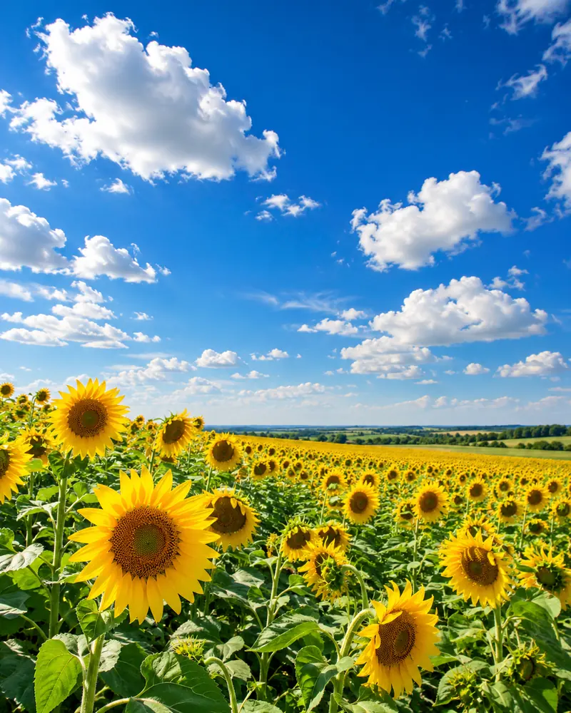
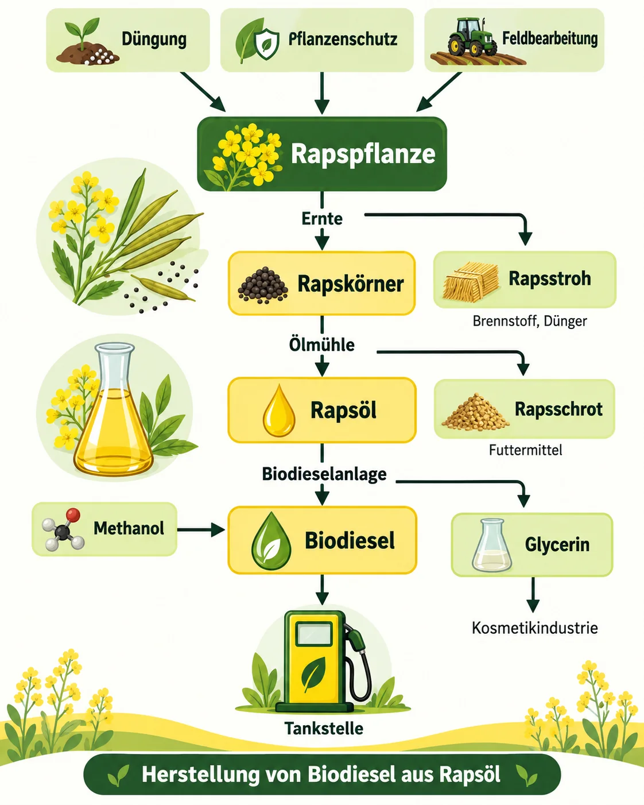
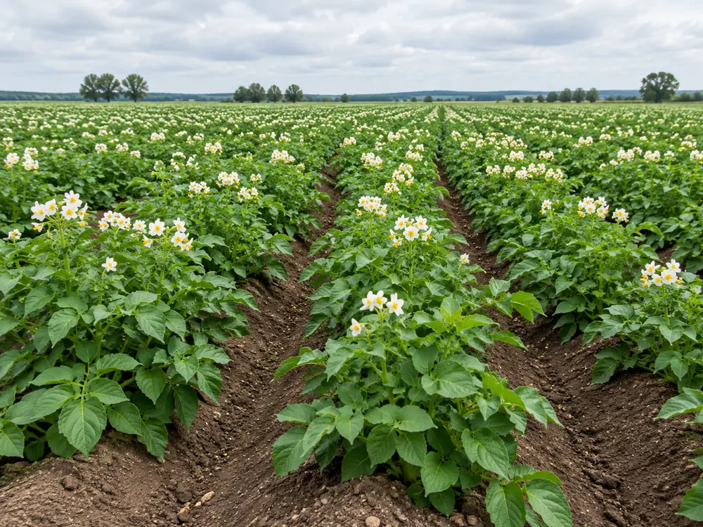
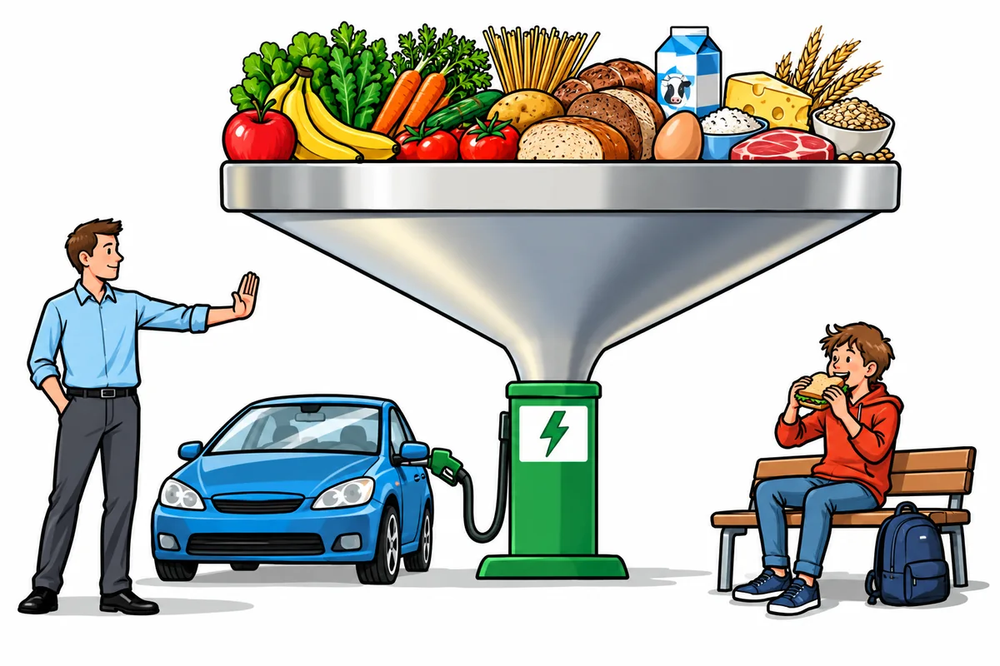
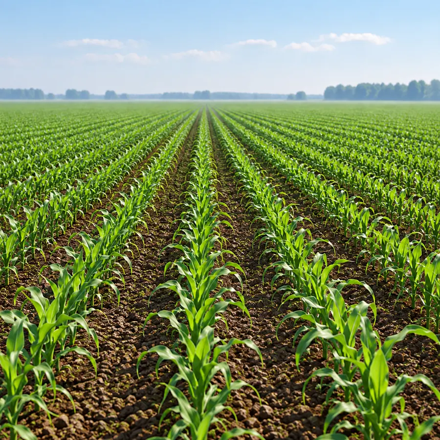
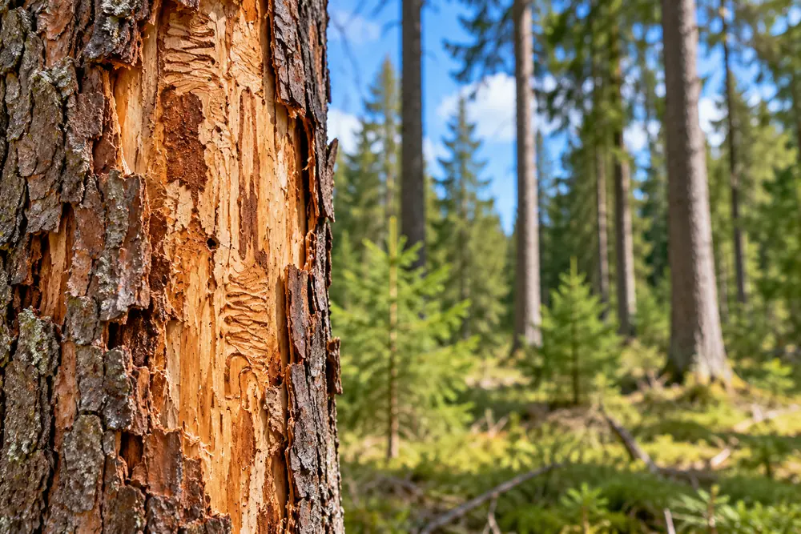
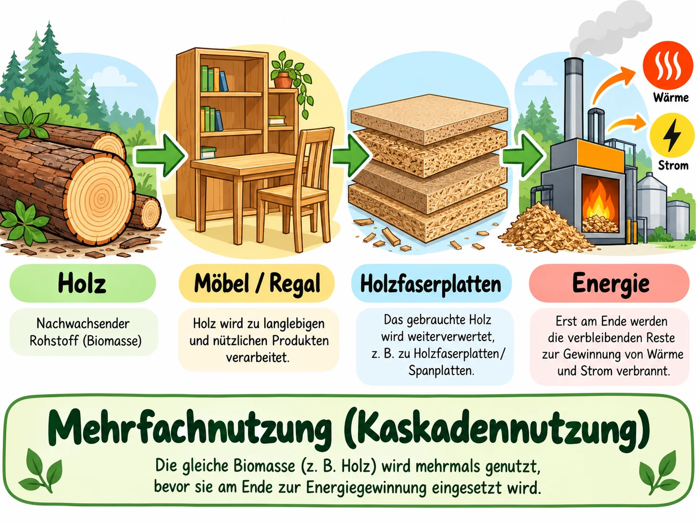
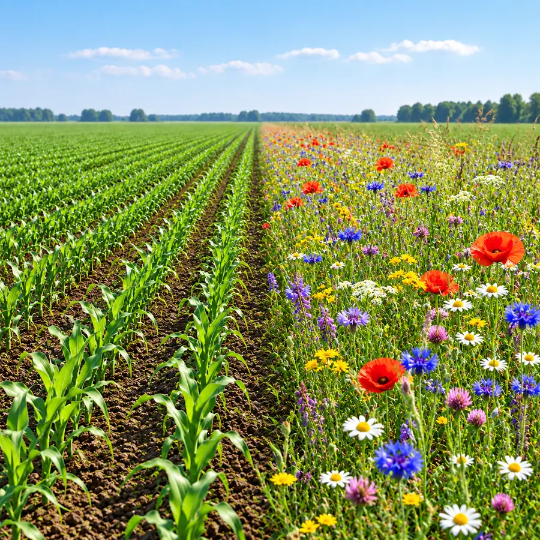

Öl aus Pflanzen
Der meiste in Deutschland stammt vom . Fast die Hälfte eines Rapssamens ist Öl – etwa 40 %.
Raps ist nicht die einzige Ölpflanze: In Sonnenblumenkernen stecken sogar 40–50 % Öl. Wie bekommt man es heraus? Das zeigt der Versuch.

Das brauchst du: etwa 30 g geschälte Sonnenblumenkerne, eine alte Kaffeemühle oder einen Küchenzerkleinerer, eine Schale aus Glas oder Porzellan, eine Waage, zwei Bechergläser (100 ml), etwa 80 ml , einen Glasstab, einen Trichter mit Filterpapier sowie ein Wasserbad (oder einen Topf mit heißem Wasser) und ein Thermometer.
So gehst du vor: Die Kerne werden fein gemahlen. Das Mehl trocknet über Nacht offen auf der Heizung. Dann kommen 20 g davon in ein Becherglas, dazu etwa 40 ml Spiritus.
Zwei Varianten: Bei A steht das Glas etwa 15 Minuten im Wasserbad bei rund 60 °C und wird ab und zu umgerührt. Bei B bleibt es genauso lange bei Zimmertemperatur stehen.
Anschließend filtrierst du das Gemisch in das zweite Becherglas. Bleibt das Filtrat einige Tage stehen, verdunstet der Spiritus – zurück bleibt das Öl.
⚠️ Spiritus fängt sehr leicht Feuer: keine offenen Flammen im Raum!
Werte den Versuch aus ✨ KI prüft
Schreibe ganze Sätze oder Stichpunkte. Die KI achtet nur auf den Inhalt, nicht auf die Rechtschreibung. Danach kannst du die Musterlösung ansehen.
Vom Raps zum Biodiesel
Rapsöl. Erste Station der Rapssamen ist die . Dort werden sie ausgepresst, das Öl wird weiterverarbeitet.
Im festen Rest, dem , steckt noch Öl. Meist wird es mit einem , also herausgelöst. Was dann übrig bleibt, heißt . Er enthält viel Eiweiß und ist deshalb ein beliebtes Tierfutter.
Biodiesel. In der Biodieselanlage reagiert das Rapsöl einige Stunden lang mit , einem Alkohol. Bei dieser chemischen Reaktion entstehen Biodiesel und . Der Biodiesel wird noch gereinigt – dann kann er in Automotoren verbrannt werden.
Vorsicht beim Namen: „Bio“ heißt hier nicht, dass besonders umweltschonend produziert wird. Es heißt nur, dass der Kraftstoff aus Pflanzen gemacht ist.

Vorteile: Läuft Biodiesel aus, bauen Kleinstlebewesen ihn ab – er ist . Außerdem gilt er als : Das CO₂ aus dem Auspuff hat der Raps vorher beim Wachsen aus der Luft geholt.
Nachteile: Für Biodiesel braucht man riesige Rapsfelder. Diese werden stark gedüngt und mit Pflanzenschutzmitteln behandelt. Und auf einem Acker voller Raps für den Tank wachsen keine Lebensmittel.
Deshalb kann Biodiesel den Diesel aus Erdöl nur zu einem kleinen Teil ersetzen. Für den gesamten Dieselbedarf müsste auf 70 % der Fläche Deutschlands Raps wachsen.
MERKE
- Ölpflanzen wie Raps liefern Öl, aus dem man Biodiesel herstellt.
- Biodiesel treibt Automotoren an.
- Er ist biologisch abbaubar und gilt als CO₂-neutral.
- Riesige Rapsfelder für Kraftstoff bringen aber Probleme mit sich: Monokulturen, viel Dünger und weniger Platz für Lebensmittel.
Verbinde die passenden Satzteile
Tippe ein Satzende an und dann den passenden Satzanfang. Du kannst die Karten auch ziehen.
Ergänze den letzten Schritt der Herstellung ✨ KI prüft
Außer Rapsöl entstehen noch andere Produkte. Wofür braucht man sie?
Biodiesel hat Vor- und Nachteile
Vom Rapsfeld zur Tankstelle
Biodiesel, ökologisch betrachtet ✨ KI prüft
Stärke als nachwachsender Rohstoff

Stärkepflanzen. Kartoffeln, Mais und Weizen speichern besonders viel , ein . In der Küche kennst du Stärke als weißes Pulver: Sie macht Soßen dick und steckt in Pudding und Kuchen.
Manche Kartoffeln landen aber nie auf dem Teller: Sie werden als angebaut. Für die Industrie hat man eigene Sorten gezüchtet, deren Stärke genau die gewünschte Zusammensetzung hat.
Wo Kartoffelstärke drinsteckt. Viele Alltagsprodukte enthalten Stärke. Papier und Pappe werden durch sie fester und lassen sich besser bedrucken.
Als hält Stärke Gipskartonplatten, Tapetenkleister, Leim und Farbstoffe zusammen, ebenso Tabletten, Zahnpasta, Cremes und Puder. Für die Landwirtschaft werden aus Stärke sogar Folien hergestellt, die in der Natur abgebaut werden.
MERKE
- Kartoffeln mit besonders viel Stärke werden gezielt für die Industrie angebaut.
- Stärke ist ein vielseitiger Rohstoff: für Papier, als Bindemittel und für abbaubare Folien.
Wie gewinnt man Stärke? Fülle die Lücken.
Tippe zuerst auf eine Lücke, dann auf das passende Wort.
In welchen Produkten dient Stärke als Bindemittel?
Welche Produkte enthalten Stärke als Bindemittel, welche haben mit Stärke nichts zu tun?
Erkläre in eigenen Worten ✨ KI prüft
Stärkefolie, selbst gemacht
Das brauchst du: 1 Teelöffel Kartoffelstärke, 1 Spatelspitze Kartoffelmehl, 1 Teelöffel (100 %), 50 ml Wasser und, wer mag, etwas Lebensmittelfarbe. Dazu ein Becherglas, einen Glasstab, Teelöffel und Löffelspatel, einen Topf als Wasserbad und eine glatte Kunststoffplatte.
So gehst du vor: Verrühre Stärke, Kartoffelmehl, Glycerin und Wasser im Becherglas. Stelle das Glas ins Wasserbad und erhitze die Mischung unter Rühren auf 100 °C. Diese Temperatur hältst du ungefähr 15 Minuten.
Die heiße Masse gießt du vorsichtig auf die Kunststoffplatte (ein alter Deckel aus PE geht auch). Nach 24 Stunden Trocknen lässt sich die Folie vorsichtig abziehen.
Im Film macht die Junior Uni Wuppertal den Versuch mit Dingen aus der Küche vor. Der Film hält an einigen Stellen an. Beantworte dann die Frage unter dem Film – erst danach geht es weiter.
Beantworte die Frage unter dem Film.
Die Knöpfe mit ❓ springen direkt zu einem Film-Stopp.
Wo Stärkefolie schon genutzt wird. Man findet sie vor allem in Verpackungen, in der Landwirtschaft und im Gartenbau.
Vorteile. Der Rohstoff wächst nach, ist CO₂-neutral und biologisch abbaubar. Im besten Fall wird die gebrauchte Folie und wird wieder zu Erde.
Nachteile. Anders als Plastikfolie hält Stärkefolie kein Wasser aus. Damit sie haltbarer wird, mischt man oft weitere chemische Stoffe bei. Dann lässt sie sich schlechter recyceln und gehört weder in die Biotonne noch auf den Kompost.
Füllmaterial für Pakete, sogenannte „Verpackungs-Chips“, gibt es aus und aus biologisch abbaubarer Stärke. Probiere aus, was im warmen Wasser passiert.
MERKE
- Aus pflanzlicher Stärke lassen sich Folien herstellen.
- Stärkefolie wird schon für Verpackungen, in der Landwirtschaft und im Gartenbau genutzt.
- Sie ist biologisch abbaubar, aber nicht wasserfest.
Stärkefolie: Vorteil oder Nachteil?
So stellst du eine Stärkefolie her
Erkläre in eigenen Worten ✨ KI prüft
Nachhaltigkeit – wo liegen die Probleme?

Welches Problem zeigt die Karikatur? ✨ KI prüft
Nachhaltigkeit. Das Wort stammt aus der . Ein Förster, der nachhaltig arbeitet, lässt nur so viele Bäume fällen, wie im selben Zeitraum nachwachsen. Verbrauch und Wachstum halten sich die Waage.
Wer handelt, sorgt dafür, dass auch die Menschen nach uns noch genug zum Leben haben.
Auch Nachwachsendes ist nicht grenzenlos. helfen, Kohle, Erdöl und Erdgas einzusparen. Trotzdem muss man sorgsam mit ihnen umgehen: Wird mehr verlangt, als nachwächst, gerät das Gleichgewicht schnell ins Wanken.
Stell ein, wie viele Bäume pro Jahr gefällt werden, und spiel 10 Jahre ab. Probiere einen Wert aus, bei dem der Wald erhalten bleibt, und einen, bei dem er schrumpft.
Was bedeutet Nachhaltigkeit im Wald? Ergänze.
Tippe zuerst auf eine Lücke, dann auf das passende Wort. Achtung: Drei Karten passen nicht.
Mehr aus dem Acker herausholen. Steigt der Bedarf an nachwachsenden Rohstoffen, soll jedes Feld mehr liefern. Die Landwirtschaft wird intensiver: mehr , mehr – und der Boden laugt aus.
Tank oder Teller? Wächst auf immer mehr Feldern Mais oder Raps für Energie, bleibt weniger Fläche für Nahrungsmittel. Energiepflanzen und Lebensmittel konkurrieren um dieselben Äcker.
Monokultur. Wo auf dem Feld oder im Wald nur eine einzige Art wächst, finden viele Tiere und Pflanzen weder Platz noch Futter. Die nimmt ab.
Stehen sehr viele gleiche Pflanzen dicht beieinander, haben Schädlinge außerdem leichtes Spiel. Oft lässt sich die Ernte dann nur mit viel Gift retten. Im Wald ist der ein bekanntes Beispiel: Befällt er Fichten, sterben sie ab.


Der Borkenkäfer befällt nur Fichten. Von einem befallenen Baum fliegen die Käfer zu den Fichten direkt daneben. Setze den Käfer in beiden Wäldern aus und vergleiche.
Zu viel des Guten: Welche Folgen hat eine sehr intensive Nutzung?
Denk an die drei Probleme oben: intensivere Landwirtschaft, Monokultur und Konkurrenz zu Lebensmitteln. Kreuze die möglichen Folgen an.
MERKE
- Nachhaltig heißt: Von einem Rohstoff wird nicht mehr verbraucht, als nachwächst.
- Auch regenerative Rohstoffe sind nur nachhaltig, solange die Nachfrage nicht größer ist als das Angebot.
Erkläre in eigenen Worten ✨ KI prüft
Nachhaltig nutzen: mehrfach, im Kreislauf, mit Vielfalt
Mehrfach nutzen (). Pflanzen und Holz sind zu schade für den einmaligen Gebrauch. Man nutzt sie möglichst mehrmals hintereinander.
Beispiel Holz: Statt es sofort zu verheizen, baut man daraus zuerst ein Regal oder einen Schrank, der viele Jahre hält. Aus dem ausgedienten Regal werden Holzfaserplatten. Erst wenn auch die niemand mehr braucht, kommen sie ins Feuer und liefern Energie.
Je öfter derselbe Rohstoff genutzt wird, desto größer ist seine .

Ein Baumstamm, zwei Wege. Starte beide und vergleiche, wie lange das Holz genutzt wird. (Die Jahreszahlen sind Beispiele.)
Ein Regal, das zweimal gebraucht wird
Tippe zuerst auf eine Lücke, dann auf das passende Wort.
Die ist das Gegenteil der Wegwerfwirtschaft.
Rohstoffe werden sparsam eingesetzt und recycelt. So braucht man weniger neue Rohstoffe, und es entsteht weniger Müll. Bei regenerativen Rohstoffen achtet man zusätzlich darauf, dass natürliche Kreisläufe und intakt bleiben.
Beobachte beide Wirtschaftsformen eine Weile. Wo werden mehr Rohstoffe verbraucht, wo entsteht mehr Müll?
Die Kreislaufwirtschaft
Tippe zuerst auf eine Lücke, dann auf das passende Wort.

Monokulturmit BlühstreifenSchiebe den Regler nach links: Am Feldrand entsteht ein .
Mehr Vielfalt auf dem Land. In vielen bayerischen Landkreisen gibt es Projekte, die Tieren und Pflanzen verlorenen Lebensraum zurückgeben sollen.
Landwirte bekommen zum Beispiel Geld, wenn sie am Feldrand Wildblumen wachsen lassen. Im Landkreis Regensburg wird ein angelegt: ein Band aus naturbelassenen Grünflächen, in dem Rehe, Wildschweine und Rebhühner leben und wandern können.
Wald für den Klimawandel. Reine Fichtenwälder leiden schnell unter Schädlingen, Stürmen und anderen Naturkatastrophen. Förster pflanzen deshalb immer öfter . So bleibt der Wald als Ökosystem gesund und liefert trotzdem gutes Holz.
MERKE
- Nachhaltig heißt: Von einem Rohstoff wird nicht mehr verbraucht, als nachwächst.
- Auch regenerative Rohstoffe sind nur nachhaltig, solange die Nachfrage nicht größer ist als das Angebot.
- Mehrfachnutzung (Kaskade) und Kreislaufwirtschaft machen die Nutzung nachhaltiger.
Die Holz-Kaskade
Erkläre in eigenen Worten ✨ KI prüft
Training für die Probe
Löse das Kreuzworträtsel
Tippe in ein Kästchen und schreibe. Tippst du ein Kästchen zweimal an, wechselt die Richtung. Ä, Ö und Ü bekommen ein eigenes Kästchen.
Vom Raps zum Biodiesel
Nachhaltig oder nicht nachhaltig?
Kreuze an
Erkläre in eigenen Worten ✨ KI prüft
Schreibe ganze Sätze oder Stichpunkte. Die KI achtet nur auf den Inhalt, nicht auf die Rechtschreibung. Danach kannst du die Musterlösung ansehen.
Rohstoff-Profi-Check
Wortspeicher
Alle Fachbegriffe dieses Moduls auf einen Blick.
Wie geht es weiter?
In Modul 3 geht es um die fossilen Rohstoffe: Wie sind Kohle, Erdöl und Erdgas entstanden – und warum sind sie nicht regenerativ?